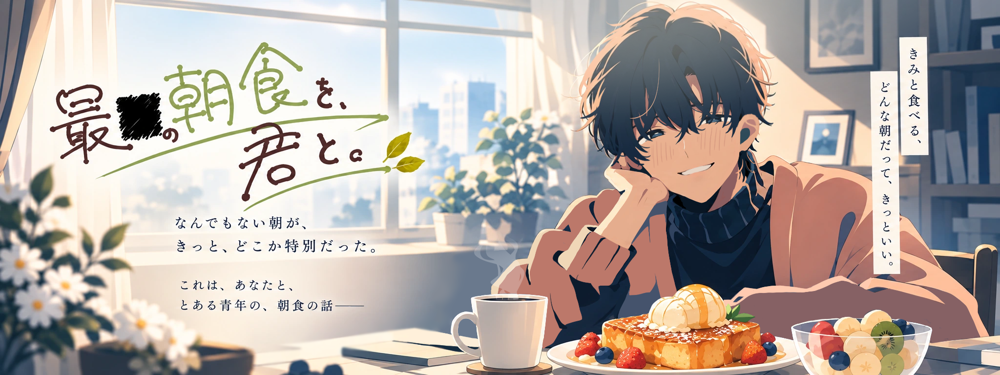
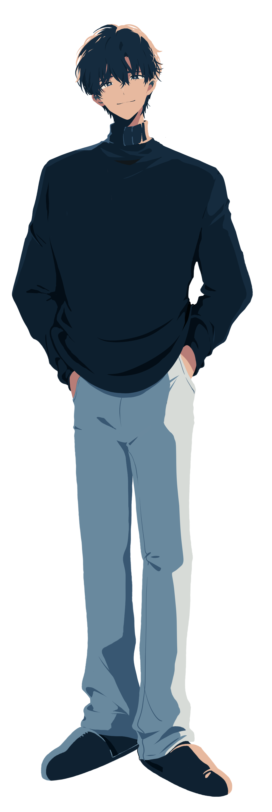
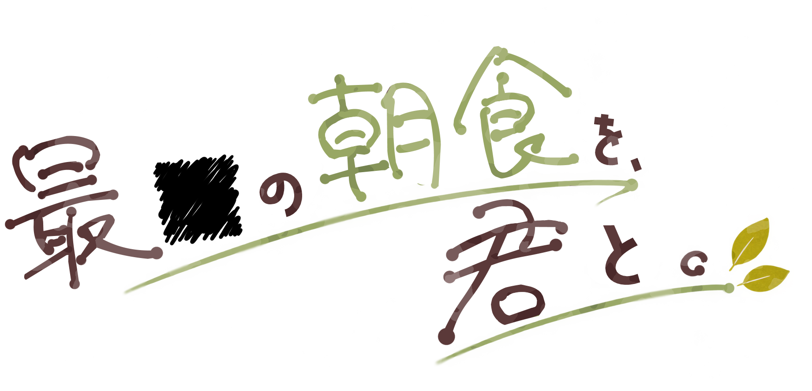
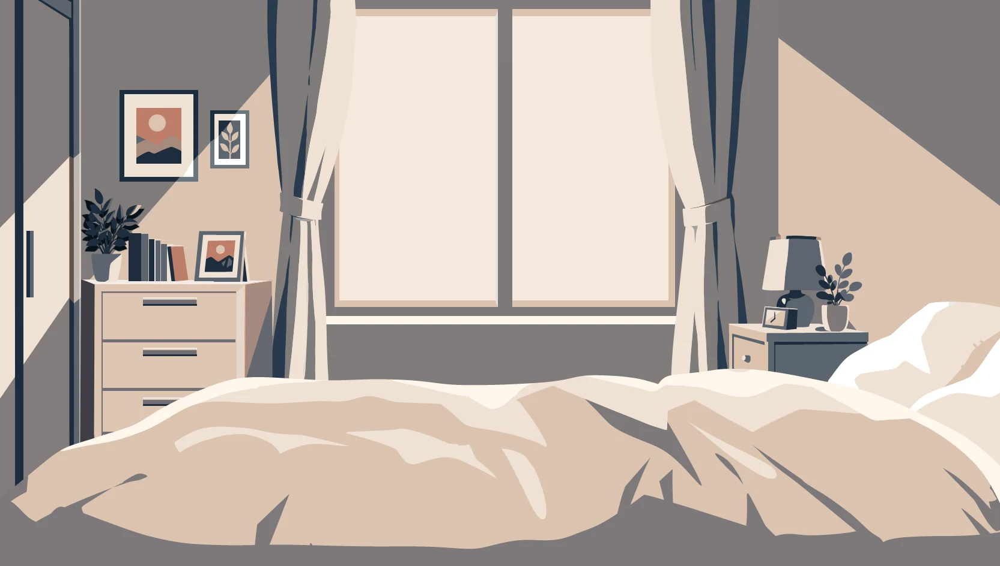
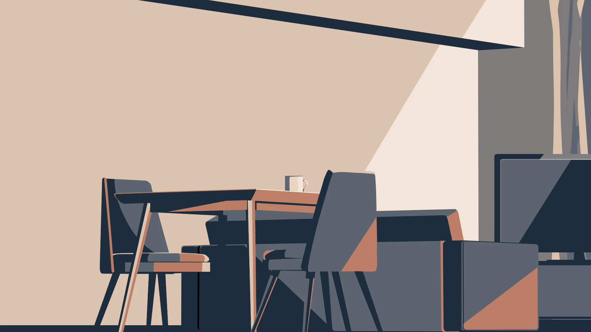
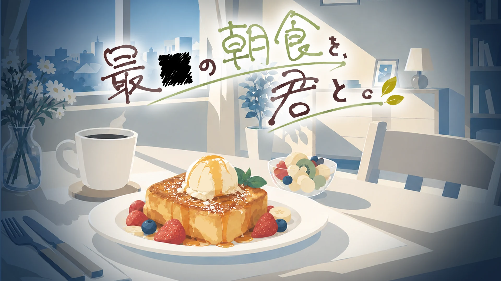

01 / THE PROTAGONIST
主人公
いつもの朝、目を覚ましたあなた。
今日は、大切な人のために朝食を作ることにした。
その姿も、声も、プレイヤーには明かされない。
※ 主人公の外見は非公開です。


GISHODO / ORIGINAL GAME CASE — 001

なんでもない朝が、
きっと、どこか特別だった。
これは、あなたと、
とある青年の、朝食の話――
きみと食べる、どんな朝だって、きっといい。
目覚めた朝、やさしい声がした。
窓からは柔らかな光が差し込んでいる。
隣には、少し眠たそうな、見知った青年。
今日は、あなたが朝ごはんを作ることにした。
食パンを切って、卵を割って、丁寧に焼いて。
大切な人のための、ごく普通の朝。
――そんな、ありふれた時間の物語。

BACKGROUND ART / BEDROOM

イラストを選択すると全身表示を開きます。
01 / THE PROTAGONIST
いつもの朝、目を覚ましたあなた。
今日は、大切な人のために朝食を作ることにした。
その姿も、声も、プレイヤーには明かされない。
※ 主人公の外見は非公開です。
02 / HIM
目が覚めると、隣にいる青年。
やさしく穏やかで、いつもあなたを気遣ってくれる。
あなたの作る朝食を、心から楽しみにしている。
「ふふ。楽しみにしてるね」
03 / UNKNOWN
不可解な出来事を調べ、記録する鑑定士。
人知れず起こる異常な現象を追い、調査を続けている。
その人物がこの朝にどう関わるのかは、まだわからない。
※ 立ち絵はシルエットのみ公開中。
完成したゲーム画面を後日追加予定です。
配布ページの公開後、こちらからご案内します。
ここから先には、エンディング名と分岐に関するネタバレを含みます。ゲームを楽しんだ後にご覧ください。
「最善」「最高」は料理の仕上がりで分岐します。焼き加減や盛り付けを工夫してみましょう。
もう一つの結末は、料理の点数だけでは決まりません。食後のひととき、どんな行動を選ぶかに注目してください。
また、どこかの朝に。